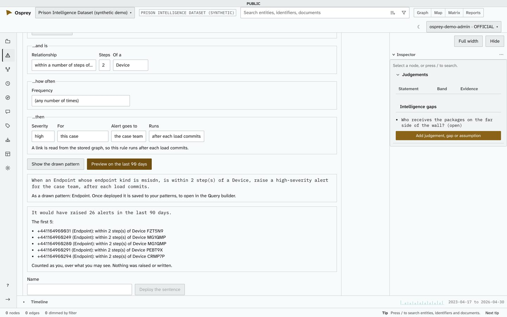
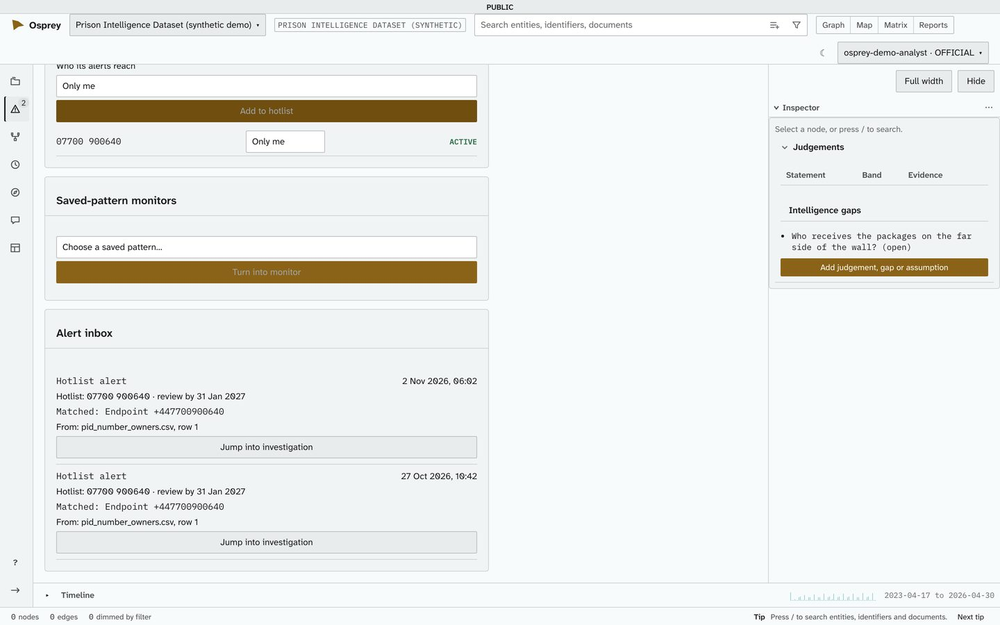
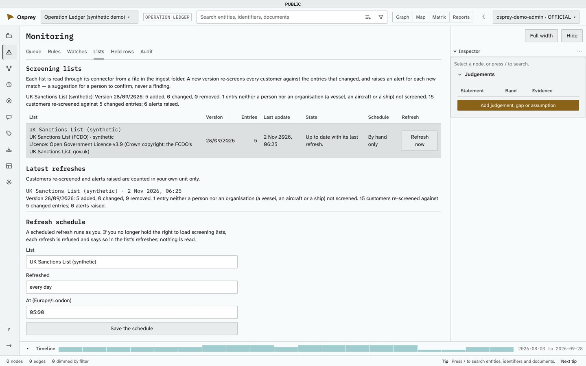
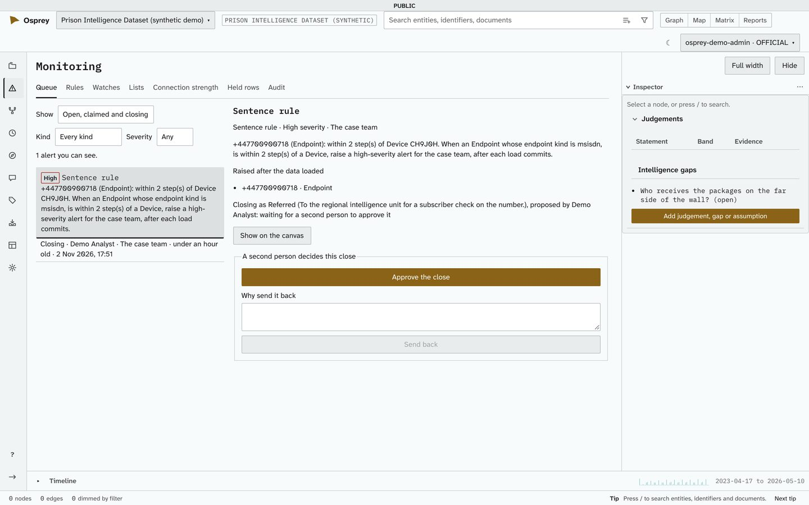
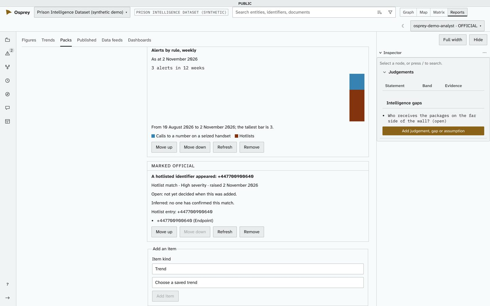
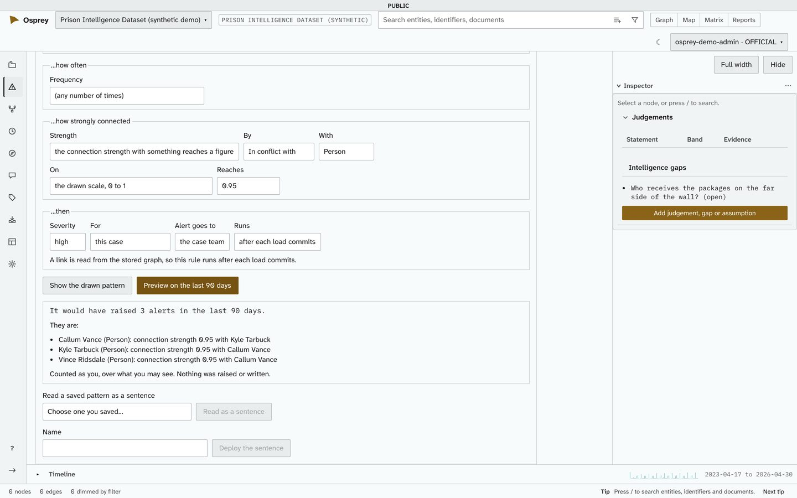

Monitoring and alerting
Monitoring and alerting, built in
Monitoring is a core part of OspreyFlow, not an add-on. Rules written as plain sentences, hotlists and screening lists raise alerts into one queue. A person decides each alert, with a reason, and a second person approves the decisions that matter.
This is monitoring of your intelligence: the people, accounts, numbers and events in your data. The platform's own health is checked with ospreyflow doctor and ospreyflow status.
One queue for every alert
The Monitoring place holds every alert you may see, in one list: alerts raised by the case's rules, hotlist alerts when data touches an identifier on a hotlist, and alerts from monitors that watch for a saved pattern in new data.
- Severity and age. Every alert is high, medium or low, and says how long it has waited. The most severe come first.
- Who may see it, on every row. The case team, a named team, or its owner alone.
- Nothing you may not see. An alert concerning anything you cannot see is neither shown nor counted, whatever its kind. Filters are applied by the server, so a count always means what it says.
- Work it. Open an alert to see why it was raised, show what it concerns on the network, and claim it. A rule alert can also be given to a member of the case by name.
Rules written as sentences, previewed before they run
A rule is built from blanks that read as one sentence: when a subject whose conditions, and is related to something, how often, then raise an alert. Every blank is a choice from a list made from your deployment's own types and links, so there is no formula to write and nothing to mistype.
- How often. A number of times within some days, a total amount over a figure within some days, or the first time ever.
- Preview on the last 90 days. See how many alerts a rule would have raised, with the first five, before it goes live. A preview raises nothing and writes nothing.
- When it runs. Before a load commits (a hit can hold its rows for a reviewer), after it commits, or on a daily or weekly schedule. A scheduled rule runs as its author, never as the system.
- Templates. Structuring, rapid movement and circular flow; screening on onboarding; and anti-money-laundering templates for high-risk jurisdictions, large cash, dormant accounts reactivated and sudden rises in velocity.
- Checks on load. A data engineer chooses which rules judge each pipeline, and sees what a sample would raise before it loads.

Watches and hotlists
A hotlist holds identifiers (a phone number, an email address, an account number), each with a review date. Any data that touches one raises an alert. An account number matches however its spaces are written. A monitor runs one of your saved patterns against new data.
- Who its alerts reach. Each hotlist says whether its alerts reach only you, or you and your team. Your administrator chooses the starting point, and may fix it for the whole deployment.
- An alert that explains itself. The identifier as you typed it, its review date, what it matched, and the file and row the match came from.
- Jump into investigation. Start a case from the alert.

Screening lists, re-screened when they change
Connectors read the UK Sanctions List, OFAC, the EU and UN consolidated lists and OpenSanctions, each proven on synthetic files. When a list changes, OspreyFlow re-screens customers against the entries that changed, and only those, and raises an alert for each new match.
- A match is a suggestion. The link between a customer and a listed party stays inferred until a person confirms it.
- Licences said plainly. Each list shows its licence. The UN list and OpenSanctions are marked "licence not confirmed", and their connectors read synthetic lists only until a licence is confirmed.
- Refreshed by hand or on a schedule, daily or weekly. How many customers each refresh re-screened is counted within the administrator's own unit only.

Closing reasons, and a second person for the decisions that matter
A person decides every alert. Closing one takes a closing reason (True match, False positive, Duplicate, No further action or Referred) and the reason in words; no other reason is accepted.
- Model-derived data stays inferred. Closing an alert as a True match is the only way a match it found is confirmed. Every other reason leaves it a suggestion, and no confidence score promotes it on anyone's behalf.
- Maker and checker. Closing a high-severity alert that others may see proposes the close; another member approves it or sends it back. A rule for the whole deployment waits for a second administrator before it runs, changes or retires. The person who proposed a decision can never approve it.
- On the record. Every rule keeps its versions: who made each, when, and who approved or rejected it.

From an alert to an investigation and a report pack
- Jump into investigation starts a case from an alert.
- Alerts in report packs. Add an alert to a report pack as it stood when you added it: what it found, its evidence, and whether it was still open or how it was closed. An unconfirmed match says so. Refresh it later to show how it was closed; the earlier copy stays in the pack's history.
- Marked and withheld item by item. An alert item carries the highest marking of what it cites. A reader who may not see all of it does not get the item, and is told only that some items are withheld, never which.
- Alert trends and a monitoring dashboard. Alerts raised each week or month, split by rule, typology, severity or outcome and counted only over what the reader may see; and a dashboard of alerts raised and closed, and how long they took to close.

Connection strength as a rule condition
How strong a link is rests on three ideas, each visible and explained on its own: the link's own evidence (how often and how recently), influencers that boost a kind of link (a direct contact, or a record or dataset that evidences it), and how rare a shared value is (two people sharing a phone few others share).
- A condition in a sentence. A rule can say "the connection strength between the subject and something it is linked to reaches a figure", or that their shared-attribute rarity does.
- Worked out as the rule's author may see. An influencer applies only when its evidence is visible, so a hidden record never strengthens a link and never reveals itself.
- Your own scoring. An installation can reproduce a client's own scoring (client parity) instead of the standard composition. Changing it installation-wide needs a second person.
